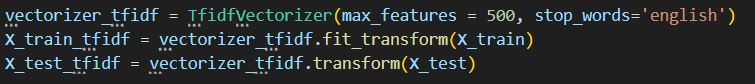

˗ˏˋ Machine Learning Home
Machine learning is a way of teaching computers to solve problems without explicitly writing every command. Instead we feed the computer training data or examples and allow the computer to learn and discover patterns on its own.
Consider the following factors and limitations:
- Data quality: The algorithm learns from patterns present in the training data. Biased training data produces biased predictions. Incomplete data leads to poor generalization.
- Overfitting: Memorizing training data instead of learning generalizableg patterns. Regularizationr will need fine tuning, but could help.
- Interpretability varies per approach: Linear models can explain why and are used for loans, medical and legal stuff. Neural networks are used for images, games and when accuracy matters most.
- Computational requirements scale with problem complexity: Training ML models demand processing power and memory. Cloud computing and specialized hardware are examples of powerful models, but costly.
Import
import numpyn as np
import pandasp as pd
from sklearn.model_selection import train_test_split
Encoder:
from sklearn.preprocessing import LabelEncoder
Long texts encoder:
from sklearn.feature_extraction.text import CountVectorizer, TfidfVectorizer
Accuracy:
from sklearn.metrics import r2_score, accuracy_score, confusion_matrix, classification_report
r2_score is for regressors, accuracy_score is for classification.
˗ˏˋ Logistic Regression
There are two types of logistic regressions:
- Binary LG: Simple yes/no questions with clear patterns (2 classes)
- Multiclass LG: Trains multiple yes/no classifiers (one for each category), then picks whichever one says "yes" the loudest or highest percentage (3+ classes)
Ex Binary LG:
Is this email spam? Spam/not spam
Is this transaction fradulent? Fraud/legitimate
Will this student pass or fail? Pass/fail
Ex Multiclass LG:
What cognitive distortion? Labeling/Mind Reading/Catastophizing,... (9 classes)
What emotion? Happy/Sad/Angry (3 classes)
What news category? Politics/Sports/Tech/Entertainment (4+ classes)
Import
from sklearn.linear_model import LogisticRegression
PolyFeatures:
Optimization to make a model smarter by introducing polynomial features, expand features generating way more data
Don't use PolyFeatures when...
- Tree based model (non-linear)
- Lots of features (slow AI)
- Deep learning (non-linear)
- Relationship is linear
- Text/NLP problems
Hyper parameters:
- solver = 'lbfgs', 'saga':
- 'lbfgs': Good for small datasets
- 'saga': Good for large datasets
- C = 0.001-100:
- Small C (0.01) = Strong regularization (simpler model)
- Large C (10.0) = Weak regularization r (complex model)
˗ˏˋ K-Nearest Neighbors
Best for: Grouping similar things together
Examples:
- Movie recommendations (People who enjoyed Movie A also enjoyed movie...)
- Medical diagnosis (do symptoms match similar past cases)
- Real estate pricing (houses in similar neighborhoods cost similar amounts)
Import
from sklearn.preprocessing import StandardScaler
from sklearn.neighbors import KNeighborsClassifier
Hyper parameters:
- n_neighbors = 3-15: small (3-5) complex boundaries, large (11-15) smoother boundaries
- weights = 'uniform'/'distance':
- 'uniform': Neighbors have equal vote
- 'distance':Closer neighbors have more influence, usually better
- Metric = 'euclidean'/'manhattan'/minkowski':
- 'euclidean' = default or straight-line distance
- 'manhattan' = City-block distance
- 'minkowski' = Generalization of both
˗ˏˋ Support Vector Machines
Best for: When you have clean datac, very accurate and handles complex problems well
Examples:
- Face recognition
- Article categorization into diverse topics
- Image classification (cat vs dog)
Import
from sklearn.svm import LinearSVC
Hyper parameters:
- C = 0.1-100: Regularizationr strength
- 0.1 (small C): Simple boundary, tolerates mistakes
- 100 (large C): Complex boundary, fewer mistakes
- kernel = 'linear','rbf', 'poly': for SVC NOT LinearSVC
- 'linear': Straight line/plane, fast and simple
- 'rbf': Most popular , curved boundaries, flexible
- 'poly': polynomial curves (specialized use)
- gamma = 0.001-10 or 'scale':
- 0.001: Far-reaching influence (looks at big circle of area affected) or smooth boundaries
- 'scale': Default, auto-calculate based on featuresf
- 10: Large, short range influence (looks at tiny circle of area affected) or complex boundaries
˗ˏˋ Decision Trees
Best for: When you need an explanation for why a decision was made
Examples:
- Brave New World Caste Classification
- Medical diagnosis that doctors need to understand
- Loan approval (bank must explain and understand why someone was rejected by bank)
Import
from sklearn.tree import DecisionTreeClassifier
Hyper parameters:
- max_depth = 3-30 or 'None':
- 3-5: Small, simple, risk of underfittingu
- 10-20 = Balanced depth
- None = Unlimited depth, risk of overfittingo
- min_samples_split = 2-20:
- 2: Small, split aggressivelys or
- 10: Balanced
- 20+: Conservative splittingc or
- min_samples_leaf = 1-50: Minimum samples in leaf nodel
- 1: Very detailed, risk of overfittingo
- 5-10: Balanced
- 20+: Conservative (fewer, bigger decisions), simpler tree
- criterion = 'gini'/'entropy': mesure quality of splits
- 'gini: Default, slightly faster
- 'entropy': Sometimes slightly better, information gain
˗ˏˋ RandomForest - Regressor/Classifier
Best for: Decision Tree accuracy but better, handles messy data well
Examples:
- Stock market prediction
- Disease prediction
- Predicting who will click on ads
Import
from sklearn.ensemble import RandomForestRegressor or
from sklearn.ensemble import RandomForestClassifier
Hyper parameters:
- n_estimators = 100-500: more than 300 trees produce smaller improvements, otherwise better performance but slower with more trees
- max_depth = 10-30 or none: controls how many questions deep ~10-30
- min_samples_split = 2-10: higher is less overfitting
- min_samples_leaf = 1-4: higher means smoother boundaries, minimmum number of samplessthat must be in leaf-nodel
- max_features = 'sqrt'/'log2'/'None': sqrt is good default, none means all features
˗ˏˋ Naive Bayes
Best for: text classification, Naive Bayes is very fast
Examples:
- Spam email detection
- Is this review positive or negative
- Document categorization (sports, politics, entertainment)
- Real-time classification with instant results
Import
from sklearn.naive_bayes import MultinomialNB
sep = 't'
Tabs separated columns means commas don't matter in text.
Text vectorization:
Converts text into numerical vectors that represent how much each word is valued. It's for multiple words that ALL matter. Numerical vectors are arrays of numbers that can be processed by machine learning algorithmns.
TF-IDF
- TF: Term Frequency, how often does this word appear in this review
- IDF: Inverse Document Frequency, how rare/unique is this word across all (in this case) reviews
from sklearn.feature_extraction.text import CountVectorizer, TfidfVectorizer
stop_words = 'english' ignores common words like "a", "the" from a predefined list.

Hyper parameters:
If import Gaussian Naive Bayes
- var_smoothing = 1e-12/1e-9/1e-6:
- 1e-12: small and sensitive, trust every observation
- 1e-9: Balanced, add tiny bit of doubt
- 1e-6: Conservativec and very cautious
If import Multinomial Naive Bayes
- alpha = 0.001-5.0: Controls how much "smoothing" is applied to handle words the model hasn't seen before
- 0.001-0.1: Confident in training set with large clean datasets
- 0.1-1.0: Most cases, medium dataset, use this when you are not sure what to use. For 100-10,000 samples
- 1.0-5.0: More smoothing where model is less confident in training data, more conservative in other words cautious
- 5.0-100.0: Extreme smoothing where model ignores training data patterns with random predictions
˗ˏˋ Gradient Booster
HistGrandientBoosterRegressor is faster than standard GrandientBoosterRegressor
Best for: Importance for best accuracy possible. However, slow and complex
Examples:
- Search engine ranking (Google uses this!!)
- Credit scoring (important to be accurate!)
- Disease diagnosis where accuracy is critical
Import
from sklearn.ensemble import GradientBoostingClassifier or from sklearn.ensemble import HistGradientBoostingClassifier or regressor: from sklearn.ensemble import GradientBoosterRegressor
Hyper parameters:
- max_iter = 50-300: controls how many trees to build ~100, adjust and experiment to find most precise model
- max_depth = 3-10: controls how many questions deep
learning_rate = 0.01-0.1:
- Lower = slower learner, needs more iterationsi
- Higher = faster learner, fewer iterationsi
max_leaf_nodes = 31-100: alt to max_depth
min_samples_leaf = 10-50: Higher is less overfittingo
Others:
Joblib
Wasting time re-training the model?
Save the trained model and load it whenever you need it!
import joblib just import
After...
model.fit(X_train, y_train)
joblib.dump(model, "my_model.joblib")
Then after,
model = joblib.load("my_model.joblib")
Which is before the y_pred code
Regressors vs classifications
Regressors sees data as numbers, classification is best for text data
r2_score is for linear regressions (different from logistic regression),accuracy_score is for classifiers accuracy expects exact matches like pass/fail not $100 234 213.94, its for classification!
StandardScaler vs MinMaxScaler:
StandardScaler is better for models that assume linear distribution and is less affected by outliers, while MinMaxScaler is more affected my outliers.
Encoder
Encoder can also convert number predictions back to text labels, additionally to converting text to number. Scikit-learn classifiers allow y to be ints, str, categories with the ONE requirement every value in y must be a single label per row
1D Array
from sklearn.preprocessing import LabelEncoder

2D Array
X_encoded = pd.get_dummies(X, drop_first=True)
drop_first=True without it causes multicollinearitym with it removes unnecessary columns (repeated or unnecessary
Inverse
y_user = label_encoder.inverse_transform(y_user)
print(f"Cognitive Distortion: {y_user[0]}")
NumPy:
An open source python library used when working with arrays/matrices (numerical data), do fast calculations, manipulate data shapes or generate random data for testing or initialization.
- Array sorting:
e.g. sort order of probabilities with
sorted_indices = np.argsort(probabilities)[::-1] returns indices (indexes) in order
- Array math operations:
calculations with arrays
X = np.array([1, 2, 3], [4, 5, 6])
X*2
Returns: [[2, 4, 6], [8, 10, 12]]
- Reshaping data:
Sklearn expects 2D arrays even if you are trying to get one pred
X_single = np.array([0.5, 0.3, 0.8])
X_single = X_single.reshape(1, -1)Now sklearn can use it to predict
- Random data generator for testing:
Quick way of creating test data for experimenting
X_test = np.random.randn(100, 10) #100 samples, 10 features
y_test=np.random.randint(0, 3, 100) #100 labels (0, 1, 2)
Set random seed for reproducibility
np.random.seed(42)
X = np.random.randn(50,5)
- Converting between types
- Checking array properties
- Indexing and slicing
- Matrix operations (advanced ML)
random_state:
Models that need random_state:
- RandomForestClassifier
- GradientBoostingClassifier and HistGradientBoostingClassfier
- LogisticRegression
- DecisionTreeClassfier
- MLPClassifier
Models that don't use random_state but something else instead to determine the same result(splitting data still need random_state):
- KNeighborsClassifier(n_neighbors = 5)
- LinearSVC(max_iter=1000)
No random_state exist for these ^
stratify=y
statify ensures your train and test sets have the same PROPORTIONS of each class: sports (25%), politics (25%), tech (25%), entertainment (25%)
X_train, X_test, y_train, y_test = train_test_split(X, y, test_size = 0.2, random_state = 42, stratify=y)
Debugging
- Checking column names:print(df.columns.tolist())
- See first 5 rows: print(df.head())
See last 10 rows:print(df.tail(10))
- Check dimensions:
Shape (rows, columns) = (1000, 2)print(df.shape)
Number of rows:print(len(df))
Print detailed info print(df.info())

- Check data types (text or numbers):
All column types:print(df.dtypes)
Specific columnprint(df['Thought'].dtype)int and float will print with 64 at the end (int64)
- Check what object variable belongs to:print(type(X))
Model type:print(type(model))
- Check for missing data:
Check for any missing values (True/False):print(df.isnull().any().any())
Show rows with missing valuesprint(df[df.isnull().any(axis=1)])
Percentage of missing values:print(df.isnull().sum() / len(df) * 100)
- Check unique values and counts:
Check unique values of a certain column:print(df['Column_name'].unique())
Number of unique values of a certain column:print(df['Column_name'].nunique())
Count of how many values per unique value (Labeling = 112, Mind Reading = 108)print(df['Column_name'].value_counts())
The above with percents (labeling 0.112 (11.2%))print(df['Column_name'].value_counts(normalize=True))
- Check arrays/matrix shapes (NumPy):
1D Array (Output: (5,))
y_encoded = np.array([0,1,2,3,4])
print(y_encoded.shape)
2D array (Output):
X_array = np.array([1,2,3],[4,5,6])
print(X_array.shape)
TF-IDF matrix:
X_train_tfidf = vectorizer.fit_transform(X_train)
print(X_train_tdidf.shape)
Check if 1D or 2D print(f"Dimensions: {X_train_tdidf.ndim}D")
Total elements (e.g. 400000)print(f"Total elements: {X_train_tfidf.size}")
Footnotes
ppandas: Library for working with data tables (CSV files)
sSamples: Data points
lLeaf node: Final decision box (all sorted), therefore root node is the first box
iIterations: Process of repeating a set of intructions to achieve a goal
oOverfitting: When a machine learning model learns the training data too well and captures noise (random or irrelevant data) and outliers
uUnderfitting: Too simple to capture the pattern in data, resulting in poor performance for both training and testing datasets.
rRegularization: Machine learning techniques to prevent overfitting by adding a penalty when the model's complexity is too high.
gGeneralizable: Model's ability to perform well on previously unseen data.
cClean data: Data with no errors or missing values and is ready to use for machine learning
cConservative Model: Less complex model aimed to minimize overfitting
fFeatures: Individual, mesurable properties or characteristics of data used as input for a model to make predictions
sSplit Aggresively: Split whenever possible, asks lots of questions even with very little data
cConservative Splitting: Being picky about splitting and asking a question only if it's worth it (& if we have enough data)
sSplitting: Decision tree splits when ividing the data by asking a new question
mMulticollinearity: Wastes memory, slows down training, cause numerical instability and gives misleading feature importance